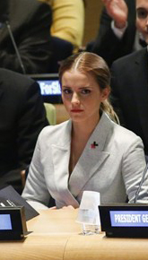

艾

当日，爱玛一袭灰色套装亮相，坐在联合国秘书长潘基文身边，尽显大牌范。爱玛在现场还发表了充满激情的演讲，她不仅号召男同胞要同等对待女性，并对人们关于女权的普遍误解做了解释。她说：“我主张男女平等，这并不难做到，但我最近在调查中发现，‘女权’一词似乎成了贬义，人们误解崇尚女权的女人都太过强大、太争强好胜，甚至不把男人当回事，毫无女性魅力。但事实并不是这样的，我们女性只是希望拥有同等的权利，能够自由支配自己的身体，能够参与政治决策，能够自己做决定，而这些要求都是合情合理的。”演说结束后，全场起立鼓掌。
当日，爱玛一袭灰色套装亮相，坐在联合国秘书长潘基文身边，尽显大牌范。爱玛在现场还发表了充满激情的演讲，她不仅号召男同胞要同等对待女性，并对人们关于女权的普遍误解做了解释。她说：“我主张男女平等，这并不难做到，但我最近在调查中发现，‘女权’一词似乎成了贬义，人们误解崇尚女权的女人都太过强大、太争强好胜，甚至不把男人当回事，毫无女性魅力。但事实并不是这样的，我们女性只是希望拥有同等的权利，能够自由支配自己的身体，能够参与政治决策，能够自己做决定，而这些要求都是合情合理的。”演说结束后，全场起立鼓掌。